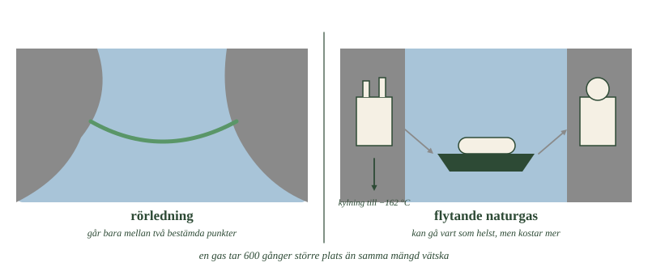
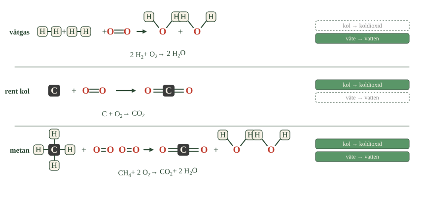
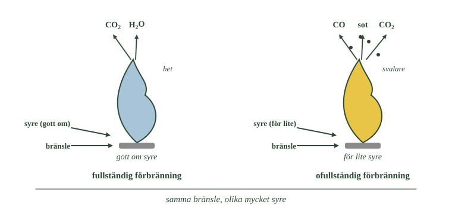

Naturgas bildades som oljan
Naturgas bildades av växtplankton, djurplankton och andra organismer som levde i havet.
De täcktes av lera, hamnade i syrefri miljö och utsattes för högt tryck och hög temperatur.
Det är samma historia som oljans. Skillnaden är temperaturen: blir det tillräckligt varmt bildas gas i stället för olja.
Naturgas finns i håligheter i berggrunden, både under havsbotten och på land. Ofta ligger den ovanpå olja, eftersom gas är lättare. Men det finns också rena gasfält där ingen olja finns.
Gasen måste transporteras i rör
En gas tar mycket större plats än en vätska. Naturgas går därför inte att lasta på en vanlig båt som olja.
I stället byggs rörledningar, ofta mycket långa. Nord Stream genom Östersjön är ett exempel — den byggdes för att föra rysk naturgas till Tyskland.
Naturgas används till uppvärmning, elproduktion och som motorbränsle.
I Sverige används mycket lite, bara 1 till 3 procent av energin. Det beror på att vi aldrig byggt något rörnät som täcker landet.
- Vilken av de två vägarna kan ändra destination efter att transporten börjat?
- Vad måste hända med gasen innan den lastas på fartyget?
- Varför går det inte att frakta naturgas som gas i en vanlig tank?

Naturgas belastar miljön mindre
Naturgas är nästan bara metan, \(\ce{CH4}\). Molekylen har en kolatom och fyra väteatomer — alltså mycket väte i förhållande till kol.
När den brinner blir väteatomerna vatten och kolatomen koldioxid. Eftersom det finns så mycket väte kommer en stor del av energin från väteförbränningen.
Därför ger naturgas mindre koldioxid per energienhet än olja, och betydligt mindre än kol. Den innehåller dessutom mindre svavel och tungmetaller.
Men den är fortfarande fossil. Kolet kommer ur det långa kretsloppet och når atmosfären lika säkert som kolets.
Naturgas är det fossila bränsle som ger minst utsläpp per energienhet. Ungefär 23 till 25 procent av världens energi kommer därifrån.
I det här avsnittet tittar vi först på naturgasen, och sedan på vad som faktiskt händer när ett bränsle brinner — både när det går bra och när det går dåligt.
Naturgas bildades som oljan men lättare
Naturgas bildades av växtplankton, djurplankton och andra organismer som levde i havet. De täcktes av lera, hamnade i syrefri miljö och utsattes för högt tryck och hög temperatur.
Det är samma historia som oljans. Skillnaden är temperaturen: blir det tillräckligt varmt bildas gas i stället för olja.
Naturgas finns i håligheter i berggrunden, både under havsbotten och på land. Ofta ligger den ovanpå en oljefyndighet, eftersom gas är lättare än olja. Men det finns också rena gasfält där ingen olja finns.
Gasen måste transporteras i rör
En gas tar mycket större plats än en vätska. Naturgas går därför inte att lasta på en vanlig båt som olja.
I stället byggs rörledningar, ofta mycket långa. Nord Stream genom Östersjön är ett exempel — byggd för att föra rysk naturgas till Tyskland.
Naturgas används till uppvärmning, elproduktion och som motorbränsle. I Sverige är användningen liten, ungefär 1 till 3 procent av energin, eftersom vi aldrig byggt ut något rörnät som täcker landet.
Naturgas belastar miljön mindre än olja och kol
Naturgas är till största delen metan, \(\ce{CH4}\). Molekylen innehåller en kolatom och fyra väteatomer, alltså mycket väte i förhållande till kol.
Det gör att naturgas ger mindre koldioxid per energienhet än olja och betydligt mindre än kol. Den innehåller dessutom mindre svavel och tungmetaller.
Men den är fortfarande ett fossilt bränsle. Kolet kommer ur det långa kretsloppet, och det når atmosfären lika säkert som kolets.
---
Att bränna gas i stället för kol räcker inte
Standardtexten säger att naturgas ger mindre koldioxid per energienhet än olja och kol. Det stämmer, och skillnaden är stor — ungefär hälften så mycket koldioxid som kol för samma mängd energi.
Det har fått naturgas att kallas ett bränsle för övergången: något man går över till på vägen bort från kolet.
Men jämförelsen har en svaghet, och den handlar om metanet som aldrig brinner.
Naturgas läcker. Den läcker vid borrhålet, i rörledningar, vid pumpstationer och i ledningsnätet under städerna. Och metan är en mycket kraftigare växthusgas än koldioxid — räknat över tjugo år omkring åttio gånger kraftigare per kilo.
Det betyder att läckaget inte behöver vara stort för att äta upp vinsten. Läcker mer än några få procent av gasen ut oförbränd blir naturgas inte bättre än kol ur klimatsynpunkt.
Hur stort läckaget faktiskt är har varit svårt att mäta. Mätningar från flygplan och satellit har under senare år visat högre siffror än vad industrin själv rapporterat.
Om modellen. "Naturgas är renare" är sant om man bara räknar vad som kommer ut ur skorstenen. Men ett bränsles klimatpåverkan börjar inte i lågan — den börjar i marken där gasen hämtas. En jämförelse som bara tittar på förbränningen missar hela frågan om vad som hände på vägen.
Att brinna är att reagera med syre
Att något brinner betyder att det reagerar med syre och att energi frigörs.
Vad som bildas beror helt på vad bränslet innehåller.
Tre exempel visar mönstret
Vätgas innehåller bara väte. När den brinner bildas bara vatten:
Rent kol innehåller bara kol. När det brinner bildas bara koldioxid:
Metan innehåller både kol och väte. Därför bildas båda:
- Följ kolatomen i rad tre. Var hamnar den?
- Vilken rad ger ingen koldioxid alls?
- Varför ger metan mindre koldioxid per energienhet än rent kol?

Titta på mönstret. Kolet tar två syreatomer och blir koldioxid. Vätet tar en halv och blir vatten.
Alla kolväten följer samma regel
Det som gäller metan gäller alla kolväten:
Kolatomerna blir koldioxid. Väteatomerna blir vatten.
Det förklarar skillnaden mellan bränslen. Ju mer väte ett bränsle har i förhållande till kol, desto större del av energin kommer från vätet — och desto mindre koldioxid bildas.
Metan har fyra väteatomer per kolatom. Kol har nästan inget väte alls. Däremellan ligger oljan.
Energin kommer från bindningarna
Var kommer energin ifrån?
Vid förbränningen bryts bindningarna i bränslet och i syrgasen. Sedan bildas nya bindningar, i koldioxiden och i vattnet.
De nya bindningarna är starkare än de gamla. Skillnaden frigörs som energi — värme och ljus.
Det är samma slags reaktion som cellandningen i delkapitel 1. Där reagerade socker med syre och gav koldioxid, vatten och energi. Skillnaden är hastigheten: i cellen sker det i många små steg, i en låga på en gång.
Förbränning är en reaktion med syre
Att något brinner betyder att det reagerar med syre och att energi frigörs.
Vad som bildas beror på vad bränslet innehåller. Tre exempel visar mönstret:
Vätgas innehåller bara väte. Vid förbränning bildas bara vatten:
Rent kol innehåller bara kol. Vid förbränning bildas bara koldioxid:
Metan innehåller både kol och väte. Därför bildas båda:
Kolvätenas förbränning följer samma mönster
Det som gäller metan gäller alla kolväten.
Kolatomerna blir koldioxid. Väteatomerna blir vatten.
Ju mer väte ett bränsle innehåller i förhållande till kol, desto mer av energin kommer från väteförbränningen, och desto mindre koldioxid bildas per energienhet.
Det är därför naturgas ger mindre koldioxid än kol. Metan har fyra väteatomer per kolatom; i kol finns nästan inget väte alls.
Energin kommer från bindningarna
Vid förbränningen bryts bindningar i bränslet och i syrgasen, och nya bindningar bildas i koldioxiden och vattnet.
De nya bindningarna är starkare än de gamla. Skillnaden frigörs som energi — värme och ljus.
Det är samma slags reaktion som cellandningen i delkapitel 1. Skillnaden är hastigheten: i cellen sker den i många små steg, i en låga på en gång.
---
Reaktionen vill ske men kommer inte igång
Standardtexten säger att energi frigörs vid förbränning, eftersom de nya bindningarna är starkare än de gamla. Det är rätt. Men då uppstår en fråga texten inte ställer:
Om reaktionen frigör energi — varför börjar den inte av sig själv?
En bensindunk står i garaget utan att brinna, trots att den omges av syre. Ett hus av trä står i hundra år i luft. Ändå skulle båda frigöra energi om de brann.
Svaret är att bindningarna måste brytas först, innan de nya kan bildas. Att bryta dem kostar energi, och den kostnaden måste betalas i förskott.
Den energi som krävs för att komma igång kallas aktiveringsenergi. Det är den en tändsticka levererar.
När reaktionen väl startat frigör den mer energi än den behövde för att starta. Överskottet värmer upp bränslet bredvid, som då också kommer över tröskeln. Därför fortsätter en eld av sig själv.
Det förklarar också varför en katalysator fungerar. Den ändrar inte hur mycket energi reaktionen ger — den sänker tröskeln, så att reaktionen kan ske vid lägre temperatur.
Om modellen. Att räkna på bindningsenergier säger vad en reaktion ger. Det säger ingenting om huruvida den sker. Två frågor, två olika svar — och det är därför en diamant kan vara brännbar utan att någon diamant någonsin fattat eld.
När syret inte räcker
Fullständig förbränning kräver tillräckligt med syre.
Räcker inte syret hinner inte alla kolatomer få tag i två syreatomer var. Då bildas kolmonoxid, CO, med bara en syreatom. Eller så reagerar kolet inte alls, och det blir sot.
Det kallas ofullständig förbränning.
Du kan se skillnaden i en låga. En blå låga betyder gott om syre och fullständig förbränning. En gul, sotande låga betyder att syret inte räcker till.
Den gula lågan är dessutom kallare, eftersom en del av energin aldrig frigörs — den sitter kvar i kolmonoxiden och sotet.
- Vilken låga är hetast, och hur syns det?
- Vad kommer ut ur den gula lågan som inte kommer ut ur den blå?
- Varför ger den gula lågan mindre energi?

Kolmonoxid är livsfarlig
Kolmonoxid är färglös och luktfri. Du kan inte känna den.
I kroppen fäster den på samma ställe i blodet som syret ska sitta, men den håller sig kvar mycket hårdare. Blodet kan då inte transportera syre, och man får syrebrist utan att märka något.
Det är därför man aldrig ska använda gasolkök inomhus utan ventilation, eller låta en bilmotor gå i ett stängt garage.
Katalysatorn städar avgaserna
I en bils avgaser finns kolmonoxid, kväveoxider och kolväten som inte hunnit brinna.
En katalysator i avgasröret får dem att reagera vidare. Kolmonoxid och kolväten blir koldioxid och vatten. Kväveoxider blir vanlig kvävgas.
En katalysator förbrukas inte. Den deltar inte i reaktionen, utan får den bara att ske snabbare och vid lägre temperatur än den annars skulle.
Men det finns en gräns för vad den kan göra.
Katalysatorn tar bort de giftiga ämnena. Den kan inte ta bort koldioxiden — för koldioxid är det förbränningen är till för att skapa.
När syret inte räcker bildas andra ämnen
Full förbränning kräver att det finns tillräckligt med syre.
Räcker inte syret hinner inte alla kolatomer binda två syreatomer var. Då bildas kolmonoxid, CO, med bara en syreatom — eller rent sot, alltså kol som inte reagerat alls.
Det kallas ofullständig förbränning.
Man kan se skillnaden. En blå låga betyder god syretillförsel och fullständig förbränning. En gul, sotande låga betyder att syret inte räcker. Den gula lågan är dessutom kallare, eftersom en del av energin aldrig frigörs.
Kolmonoxid är livsfarlig
Kolmonoxid är färglös och luktfri. Den går inte att upptäcka med sinnena.
I kroppen binder den till de röda blodkropparna på samma plats som syret, men mycket hårdare. Den som andas in kolmonoxid får därför syrebrist utan att märka det.
Det är därför man aldrig ska använda gasolkök inomhus utan ventilation, eller låta en motor gå i ett stängt garage.
Katalysatorn städar avgaserna
I en bils avgaser finns kolmonoxid, kväveoxider och kolväten som inte hunnit brinna.
En katalysator i avgasröret får dessa ämnen att reagera vidare. Kolmonoxid och kolväten omvandlas till koldioxid och vatten, och kväveoxider till vanlig kvävgas.
En katalysator förbrukas inte i reaktionen — den får den bara att ske snabbare och vid lägre temperatur.
Men det finns en gräns för vad den kan göra. Katalysatorn tar bort de giftiga ämnena. Den kan inte ta bort koldioxiden, eftersom koldioxid är det förbränningen är till för att skapa.
Kolmonoxiden sitter tvåhundra gånger hårdare
Standardtexten säger att kolmonoxid fäster där syret ska sitta i blodet, och håller sig kvar hårdare. Här är vad som faktiskt händer.
Syre transporteras i blodet av ett protein som heter hemoglobin. Mitt i det sitter en järnatom, och det är till järnet syremolekylen binder. Bindningen är avsiktligt svag: syret ska kunna släppa igen när blodet når en cell som behöver det.
Kolmonoxid binder till samma järnatom. Men den binder ungefär tvåhundra gånger starkare än syret gör.
Följden är att kolmonoxiden inte släpper. Hemoglobinet är fortfarande helt, men platsen är upptagen, och blodet kan inte längre transportera syre.
Det är därför en låg halt räcker för att vara farlig. Redan några tiondels promille kolmonoxid i luften kan blockera en stor del av blodets syretransport, och personen känner bara trötthet och huvudvärk innan det blir allvarligt.
Behandlingen följer direkt av kemin: ren syrgas, i så hög koncentration som möjligt. Konkurrerar tillräckligt många syremolekyler om platsen släpper kolmonoxiden till slut.
Om modellen. "Kolmonoxid är giftig" säger att den skadar. Men den är inte giftig på det sätt många ämnen är — den förstör ingenting. Den sätter sig bara på rätt plats och vägrar flytta på sig. Det är en fråga om vem som binder hårdast.
Laddar övningskort…
Laddar frågor ...